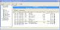
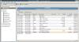

|
Technical information
Transcraft My Accountant was written using the Java language from
Sun
Microsystems®. The Graphical
User Interface (GUI) component was developed using the Standard Widget Toolkit
(SWT) from IBM®. SWT is the
foundation layer for the Eclipse project, which provides excellent development
environment for Java, Perl, and Palm OS®, namely in the
Eclipse IDE. The underlying
database technology is the object database technology from
db4objects®. Reporting technology powered by
the Jasper Reports
reporting engine. Please follow the above URL's to find out more about these
technologies. The application has been developed on a Windows® platform,
but has been recompiled and works flawlessly on Linux. Below are the
screenshots for the same entry account on Linux and Windows (apologies I do
not yet own an Apple® machine to produce the Mac OS X® version, but hopefully
that will be remedied soon). Windows:

Linux

The technology from dbobjects® has
dramatically shortened the development time, as mapping from domain models to
persistence is now one single step instead of three. The company also provides
excellent technical support, with their own developer community program and
dedicated NNTP server and news groups.
I used the Visual designer for Jasper Reports from a product called
IReports.
Without this tool, it would have taken much longer to put together the
templates for the reports. The only down side to IReports is it was written in
Swing, so the look and feel is a world apart from the SWT based environment
provided by Eclipse.
The source code is now available on
Sourceforge,
together with the binary distribution for Linux and Win32 platforms. Build and installation is pretty simple, as you can just drop the
project directly into the Eclipse IDE. Please note that the I used Eclipse 3.0
to build the Win32 version, and Eclipse version 3.1 to build the Linux
version, so the code should work fine with either (although you might need to
tweak the build and runtime paths a bit to pick up the correct SWT Java and
native libraries. Drop me a mail if you need help).
Outstanding work
I intend to implement additional features for this application. The features I
have in mind are:
- payroll support (this costs me £100 per year currently)
- inventory control (I don't need this right now as I only do
consultancy work, but if I ever open an Internet shop, this will be top of
the list)
- Ecommerce internet front end to link to inventory, with full order
management
- customisable Point of Sale terminals (so you can adapt it for your
business, be it a Restaurant or a Boutique), this way you don't have to even
worry about the accounting back end
- import/export to Sage, QuickBooks, etc.
- on line tax filing (this saves you £250 a year)
- multi-currency support (currently the application is locale aware i.e.
it will pick up your local currency/date settings etc. correctly, but you
can not pay or receive amounts in another currency)
- integration of Customer Relationship Management and Google Map
- auto web update (for new features, new payroll tables, patches, support,
registration etc.)
- context sensitive help
As I have limited resources and free time these days, I would like to get some
kind of feedback as to what the level of interest is so I can decide which
features to give more priority to, or whether to implement them at all. Let me
know either directly by
email
or using the Sourceforge
forum.
Also, it would be nice to get some feedback and bug reports on the existing
application too. I would like to make it better, so if you could be specific
about the problems you encountered, rather than just 'it does not work !'.
NOTE: although most of the things I list above are very UK centric, I
have taken care to ensure the application can be configured to run in another
country. You will of course have to modify the tax rates etc. for your region
to make sure all the ledger postings are done correctly.
AOB (Any other Business)
Other minor tasks are:
- complete migration to Eclipse 3.1
- Migration to JDK 1.5
- maybe add support for smart PDAs and phones
- finish the Online Manual
|
Home
Screen shots
Technical
Download
Online Manual
Support
Contact us

|